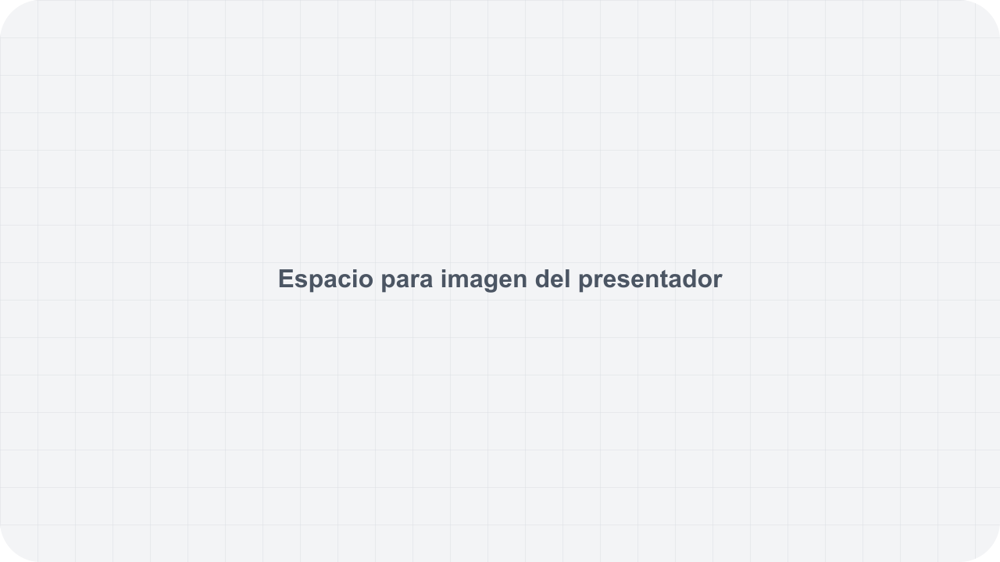

Formacion clara para equipos que sirven mejor
Deck sintetico para probar narrativa de propuesta, evidencia, metodologia y cierre.
La necesidad no es mas contenido, sino mejor acompanamiento
La propuesta organiza objetivos, rutas de aprendizaje y seguimiento para que la formacion tenga continuidad.

Un sistema formativo, no una charla aislada
El valor institucional aparece cuando contenido, practica y seguimiento se disenan como una sola experiencia.
Tres capas sostienen la implementacion
Diagnostico
Clarificar audiencia, nivel, retos y metas antes de producir.
Ruta
Convertir objetivos en sesiones, practicas y recursos.
Seguimiento
Medir asistencia, avance y evidencia cualitativa.
Las metricas se muestran solo si tienen fuente
Participantes inscritos
Sesiones completadas
Evidencias revisadas

El facilitador debe tener presencia visual real
Si falta la fotografia, se reserva el espacio con placeholder honesto y se reemplaza antes de entrega final.
La ruta se entiende como una secuencia de decisiones
1. Alcance
Definir audiencia y objetivo.
2. Diseno
Mapear sesiones y practicas.
3. Ejecucion
Facilitar y documentar avance.
4. Cierre
Revisar evidencia y aprendizajes.
La decision mejora cuando se ven las opciones
| Modelo | Uso | Riesgo |
|---|---|---|
| Taller unico | Impulso inicial | Baja continuidad |
| Ruta modular | Proceso formativo | Requiere seguimiento |
| Acompanamiento | Transferencia a practica | Mayor coordinacion |
El siguiente paso es definir alcance
Confirmar audiencia, duracion, responsables y evidencia esperada antes de producir el deck final.